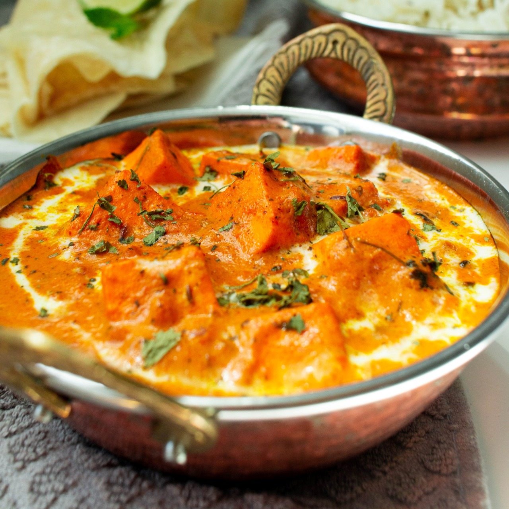

Tawa Paneer

Description
The entire recipe is cooked on a tawa, a flat or concave-shaped round pan; an essential piece of utensil in any Indian kitchen.
Ingredients
- Paneer Cubes
- Tomato Masala
- Capsicum
- Spices
- Green Chilli
Steps
- Add chopped tomatoes in a blender and make a puree
- Chop one large onion and capsicum
- Chop one green chilli
- Crush 1 inch ginger and 4 to 5 small to medium garlic cloves in a mortar-pestle to a paste.
- Melt 2 tablespoons butter on a tawa
- Add carom seeds and fry them for a few seconds.
- Add finely chopped onions
- Add the prepared tomato puree and mix well
- Season with salt as required and saute with stirring at intervals
- Saute till you see butter releasing from the sides and the masala has thickened a bit.